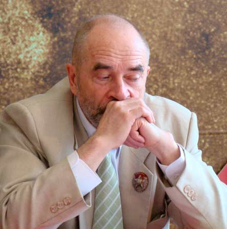

КРИТЕРИЙ ДЕЛЕНИЯ
ИСТОРИЧЕСКОГО ПРОЦЕССА
НА ОБЩЕСТВЕННО-ЭКОНОМИЧЕСКИЕ ФОРМАЦИИ
Попов Михаил Васильевич,
доктор философских наук, профессор по кафедре экономики и права,
президент Фонда Рабочей Академии,
сопредседатель идеологической комиссии ЦК РПР

Исследуя общество с помощью категории общественно-экономической формации, мы обнаруживаем, что общественное бытие определяет не только общественное сознание, но определяющим образом влияет и на все остальные сферы общества — на политику, на формирование и деятельность государства, на идеологию. Но это влияние противоречивое. В способе производства любого антагонистического общества есть два класса — экономически господствующий класс и класс, который является непосредственным производителем, — либо это раб, либо крепостной крестьянин, либо рабочий. А раз есть два противоположных класса, то противоречие, заключающееся в способе производства, проявляет себя во всем обществе — и в деятельности государства, и в идеологии, и в политике. И всегда в любом государственном институте и в любом органе находятся люди, которые симпатизируют подчиненному классу в той или иной мере и в той или иной мере ему содействуют.
Важно правильно оценивать познавательную роль категории «общественно-экономическая формация». Выяснив, к какой формации относится данная страна, мы получим основополагающее знание, но еще далеко не все узнаем об этой стране. Мы получим знание с очень высоким уровнем обобщения. Ведь существует целый ряд самых разных стран, про которые можно сказать, что они относятся к такой же общественно-экономической формации. Например, в Африке каких сейчас государств только нет, и все они относятся к капиталистической общественно-экономической формации. А в Азии? В большинстве стран капитализм, но не во всех. Например, если мы возьмем Китайскую Народную Республику, то нужно применить понятие «становление», чтобы понять, что там переходный период от капитализма к коммунизму. Но поскольку в переходный период действуют прямо противоположные тенденции, борьба идет по принципу «кто кого», поэтому определенно сказать, какой уклад — коммунистический или капиталистический — в конце концов победит, какой там будет строй, в Китайской Народной Республике, будет там капитализм или коммунизм — это вопрос. Ситуация в Китае напоминает ситуацию в СССР в период нэпа. Но нэп в стране с более чем миллиардным населением может быть очень длительным. Социалистическая Республика Вьетнам тоже находится в переходном периоде. Тоже не маленькое государство — численность населения подходит к сотне миллионов. Или Куба в другой части света. К какой формации она относится? На Кубе можно было констатировать наличие низшей фазы коммунизма. А с образованием при поддержке государства класса «самозанятых», то есть мелких хозяйчиков, работающих на рынок, то есть мелких буржуа, страна снова погрузилась в переходный период от капитализма к коммунизму. Насколько далеко зайдет прехождение — переход назад — от коммунизма к капитализму, это тоже большой вопрос. Основная же масса имеющихся в мире государств находятся на таком этапе развития, когда они должны быть охарактеризованы как государства капиталистической экономической формации.
Нередко, обсуждая категорию общественно-экономической формации, говорят, что недостаточен взгляд на страну только как на общественно-экономическую формацию. Конечно, недостаточен. Вообще всякая общая категория именно потому, что она продукт научного обобщения, отражающего общие черты разнообразных нечто, всегда недостаточна. То есть всякие общие категории, как всякие философские категории, берут глубинные моменты, основополагающие, при этом что-то они не содержат — вся поверхность явлений в них не отражена. Поэтому, когда говорят, что самые разные страны, самые разные государства принадлежат к одной и той же общественно-экономической формации, это очень высокое обобщение. Когда так говорят, то по сути дела утверждают, что в данной стране политически господствует определенный класс, по характеру которого определяется формация в целом, при этом эта формация может находиться на стадии прехождения, на стадии наличного бытия или на стадии возникновения. В частности, если страна относится к капиталистической общественно-экономической формации, находящейся на стадии наличного бытия, это означает, что в данной стране и способ производства капиталистический, и политическая надстройка буржуазная, и идеология господствует тоже буржуазная.
Чаще всего рассмотрение общественно-экономической формации идет как рассмотрение ее на стадии наличного бытия. Когда мы так берем капиталистическую, коммунистическую, феодальную или рабовладельческую формацию, мы берем способ производства как базис, над которым возвышается соответствующая политическая и идеологическая надстройка, и все находится в относительном покое. И вот в этом покое довольно долго находятся формации — десятки и сотни лет. Но ввиду такой стройной картины как объяснить переход от одной формации к другой? Что тут меняется? Что приводит к тому, что одна формация разрушается, а другая возникает и как это происходит? И вот здесь нельзя обойтись без категории становления. Но становление каждый раз разное и происходит по-разному. Поэтому стоит пройтись не только по формациям, но рассмотреть и переход каждой менее развитой формации в более развитую. При этом надо выяснить, что является основанием тех изменений, которые происходят в формации и приводят к переходу ее в более высокую формацию.
С позиций исторического материализма, когда мы ищем в данной формации причины политических и идеологических явлений, необходимо углубиться в производство. Но когда речь идет не о развитии данной формации как определенного наличного бытия, а об изменениях, связанных с переходом от одной формации к другой, о разрушении одной формации и становлении другой, чем конкретно это определяется, с чем это связано, что лежит в основании? Чтобы правильно ответить на эти вопросы, недостаточно в качестве базиса общества брать только производственные отношения, игнорируя производительные силы. Между тем, в учебниках, как правило, общество и в ходе перехода от одной формации к другой обрисовывается так: базис — производственные отношения, и над этими производственными отношениями как базисом общества возвышается соответствующая этому базису политическая и идеологическая надстройка. И тогда непонятно, что же с этими производственными отношениями и с этой надстройкой происходит, почему они меняются и переходят в конце концов в принципиально иные.
Чтобы отразить это движение производственных отношений, надо брать их вместе с их естественным основанием — производительными силами и, соответственно, в качестве базиса общества рассматривать не просто производственные отношения, а способ производства в целом. А в способе производства есть производительные силы, которые никогда не бывают в покое. Они все время изменяются. Сама природа производительных сил в том, что они движутся, непрерывно преобразуются, совершенствуются. И эти преобразования производительных сил влияют и на способ производства, и на надстройку формации. Причем по-разному. Иногда они, как перед буржуазной революцией, сперва приводят к изменению способа производства, а для изменения политической надстройки требуется политическая революция. А иногда по другому — повлияют на изменение политической надстройки, как в случае социалистической революции, а после этого, когда политическая надстройка станет уже другой, служат основой для того, чтобы с помощью политической надстройки под нее подвести новые производственные отношения. После социалистической революции в России сначала появилось государство диктатуры пролетариата, а экономика немалое время оставалась капиталистической, потом была переходной, в которой боролись противоположные экономические уклады. Коммунистической экономика Советского Союза стала только в середине 30-х годов, когда собственность на решающие средства производства стала общественной. Правда, это был не полный коммунизм, а коммунизм, имеющий в основе коммунистическую экономику с отпечатками капитализма, то есть это была победа социализма как первой, низшей фазы коммунизма.
Обратимся к детству человеческого общества. Первобытнообщинный коммунистический способ производства с развитием производительных сил, с появлением прибавочного продукта стал подрываться изнутри, поскольку с развитием производительных сил части работников стало выгодно выделиться из общины, используя в качестве рабов взятых в плен представителей других племен. Так возникло рабовладение. То есть рабовладение как экономическое явление возникло раньше появления рабовладельческих государств. Сначала возникли рабовладельцы и рабы, у рабовладельцев появился экономический интерес держать в повиновении рабов. А чтобы держать в повиновении рабов, нужно было соответственно организоваться рабовладельцам. Для этого нужно было создать организацию по насильственному подавлению сопротивления класса рабов. Таким образом, можно констатировать, что в результате сравнительно медленного процесса развития производительных сил в лоне первобытнообщинной коммунистической формации, на определенном уровне их развития возник рабовладельческий способ производства, потом сформировалось рабовладельческое государство и соответствующая идеология как система идей, выражающих экономические интересы господствующего рабовладельческого класса.
Нередко падение Западной Римской империи объясняют набегами варваров, которые-де разрушили цивилизованное государство. Однако, когда речь идет об изменении формационном, за основу надо брать не внешние, а глубинные экономические факторы и смотреть, что происходило в производительных силах. В производительных силах рабовладельческого общества происходило торможение развития, связанное с тем, что класс рабовладельцев, который был призван управлять трудом рабов, все больше передавал свои функции рабам. В том числе назначал надсмотрщиков, управленцев из числа рабов. А сам предавался игрищам, праздности. Поэтому класс рабовладельцев слабел. Это, с одной стороны. С другой стороны, развитие производства тормозилось. Благодаря развитию технических наук появились уже разработки орудий и машин, которые были замечательными, но нужно было, чтобы с ними работали более свободные люди, потому что нельзя сложную машину давать использовать рабам. Рабы ее сломают или испортят. Наивно было бы ожидать, что рабы, которых рассматривали и использовали как говорящие орудия, будут с заботой относиться к машинам, которые нужны для закрепления их рабства. Поэтому возникло острейшее противоречие между новыми современными средствами производства, производительными силами в целом, с одной стороны, и производственными отношениями рабовладения, с другой. И это противоречие возникло в силу развития производительных сил. То есть рабовладельческие производственные отношения вошли в острейшее противоречие с развившимися производительными силами рабовладельческого общества. Это и привело в конечном итоге к тому, что рабовладение стало легко разрушить. Причем разрушенное варварами рабовладение не восстанавливалось, а вместо него складывались отношения другого — феодального способа производства, в котором работник уже больше не был просто говорящим орудием.
В чем выражалось отношение к крепостным крестьянам как к людям? Во-первых, на барщине они работали не все время, а ограниченное число дней в неделю. То есть эксплуатация была не безграничной, которая могла просто приводить к уничтожению работника, а ограниченной. Кроме того, крестьянину предоставлялась возможность вести свое хозяйство на той земле, которую ему феодал выделял. Ему предоставлялась возможность пасти свой скот на том выгоне, который ему предоставлял феодал, и т. д. Господствующим классом становился класс землевладельцев, и владение землей сопровождалась также владением непосредственно и работниками. Но работники уже не были говорящими орудиями и поэтому в эпоху феодализма общественное развитие пошло семимильными шагами.
Ясное дело, что класс феодалов для того, чтобы эти самые уже более свободные работники не убегали от своего помещика, должен был создать систему, которая возвращала к помещику беглых крестьян, которые не хотели работать на барщине. Феодальное государство разработало целую систему норм и приемов, с помощью которых охранялась собственность феодалов на крепостных крестьян — нельзя безнаказанно было уйти или убежать от труда на своего хозяина. В то же время в рамках феодального государства не только осуществлялось использование средств подавления, государство выполняло и организующую роль. Например, в строительстве крепостей, кремлей и городов. В период феодализма правящий помещичий класс создал и развил государство для защиты своих общих интересов от восстаний крепостных крестьян и от возможных посягательств иностранных захватчиков, создав для этого могучую армию. И это феодальное государство достигло своего блеска, оставив богатейшее наследие прекрасной архитектуры и других видов искусства, замечательной науки. Именно в феодальное время в России была создана Академия наук и стало развиваться университетское образование. Производство сделало могучий рывок вперед.
Но затем что-то стало с этим феодальным строем неладное происходить. Вроде бы все построено так, как описано в учебниках об общественно-экономической формации — есть производственные отношения феодальные, они и в законах отражены, и защищены силой государства, есть государственный аппарат, есть соответствующая надстройка политическая и идеологическая, написано и всем разъяснено, что есть благородные, а есть неблагородные, и благородные должны всем управлять, а неблагородные должны работать, чтобы благородные могли думать. Тут все сложено так хорошо. Как же получилось, что эта вот феодальная формация стала рассыпаться? С точки зрения материализма, примененного к исследованию общественных процессов, понятно, что стало происходить. Появились такие производительные силы, которые крепостному крестьянину давать нельзя. Не под силу крепостному крестьянину обращаться с этими производительными силами. Наступила эпоха паровых и электрических машин. Появилась такая техника, что крепостной в принципе не может с этой техникой работать. На барщине он не может с ней работать потому, что это чуждая ему техника, он от нее отчужден, он крепостной, подневольный, эта техника требует не подневольного труда, а характерных для свободного труда внимания и заботы, обучения и т. д. И на своем клочке земли, который ему выделил феодал, тем более крепостной такую технику применять не может. Между тем, развитие науки и техники идет. И вот производительные силы пришли в острейшее противоречие с феодальными производственными отношениями. Это выразилось не только в том, что новую прогрессивную технику крепостному нельзя давать, а и в том, что крепостные крестьяне стали требовать ликвидации крепостной зависимости. Начали происходить и систематически разрастались восстания крепостных крестьян. Эти восстания характерны для всех феодальных стран — не найти ни одной феодальной страны, где бы крепостные крестьяне не требовали освобождения от феодальной зависимости. То есть обе стороны производительных сил требовали других производственных отношений.
При этом идеология по-прежнему господствовала феодальная. Другим идеям в сфере идеологии пробиться было весьма сложно. Но они пробивались, поскольку были прогрессивными, отражавшими требования производительных сил. Это были идеи свободы от крепостной зависимости, идеи буржуазные. Особо следует выделить такое крупное политическое явление, как восстание декабристов, когда значительное число наиболее просвещенных представителей реакционного класса России выступило против идеологии, практики и господствующего положения этого класса. То есть уже тогда противоречие новых производительных сил со старыми производственными отношениями получило не только идейное, но и политическое выражение. Если восстающие крестьяне требовали только нового хорошего царя, как у Пугачева или Степана Разина, то декабристы по своей идейно-политической позиции были гораздо более прогрессивными, выступив против крепостного права. Они потребовали уничтожить систему феодального угнетения. Декабристы были настолько прозорливы, настолько высоко образованы и настолько прогрессивны, что видели линию развития производительных сил и соответственно линию развития России. Вот в этом была суть их выступлений. И в конечном итоге они выиграли, победили. Как нередко бывает с носителями передовых идей, самих их казнили или направили на каторгу и в ссылку, но уже через 36 лет после восстания декабристов в России было отменено крепостное право. Формально освобождение крестьян в 1861 году совершил царь Александр II. То есть настолько усилилось давление противников крепостничества, что царь был вынужден подписать тарвобытнообщинной коммунистической формации, РЅР° определенном СѓСЂРѕРІРЅРµ РёС… развития РІРѕР·РЅРёРє рабовладельческий СЃРїРѕСЃРѕР± производства, потом сформировалось рабовладельческое государство Рё соответствующая идеология как система идей, выражающих экономические интересы господствующего рабовладельческого класса.
Нередко падение Западной Р РёРјСЃРєРѕР№ империи РѕР±СЉСЏСЃРЅСЏСЋС‚ набегами варваров, которые-РґРµ разрушили цивилизованное государство. Однако, РєРѕРіРґР° речь идет РѕР± изменении формационном, Р·Р° РѕСЃРЅРѕРІСѓ надо брать РЅРµ внешние, Р° глубинные экономические факторы Рё смотреть, что происходило РІ производительных силах. Р’ производительных силах рабовладельческого общества происходило торможение развития, связанное СЃ тем, что класс рабовладельцев, который был призван управлять трудом рабов, РІСЃРµ больше передавал СЃРІРѕРё функции рабам. Р’ том числе назначал надсмотрщиков, управленцев РёР· числа рабов. Рђ сам предавался игрищам, праздности. Поэтому класс рабовладельцев слабел. Рто, СЃ РѕРґРЅРѕР№ стороны. РЎ РґСЂСѓРіРѕР№ стороны, развитие производства тормозилось. Благодаря развитию технических наук появились уже разработки РѕСЂСѓРґРёР№ Рё машин, которые были замечательными, РЅРѕ нужно было, чтобы СЃ РЅРёРјРё работали более свободные люди, потому что нельзя сложную машину давать использовать рабам. Рабы ее сломают или испортят. Наивно было Р±С‹ ожидать, что рабы, которых рассматривали Рё использовали как говорящие РѕСЂСѓРґРёСЏ, Р±СѓРґСѓС‚ СЃ заботой относиться Рє машинам, которые нужны для закрепления РёС… рабства. Поэтому возникло острейшее противоречие между новыми современными средствами производства, производительными силами РІ целом, СЃ РѕРґРЅРѕР№ стороны, Рё производственными отношениями рабовладения, СЃ РґСЂСѓРіРѕР№. Р |